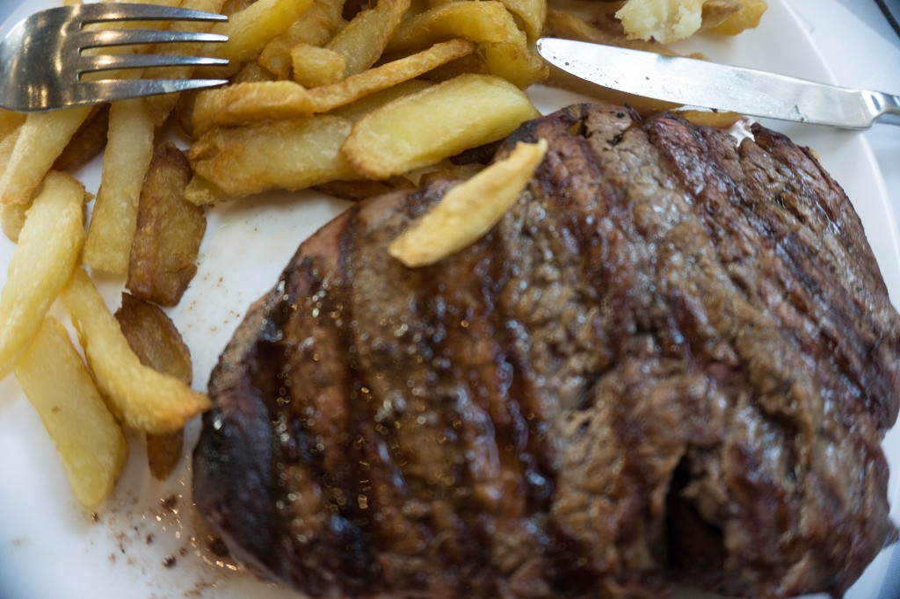
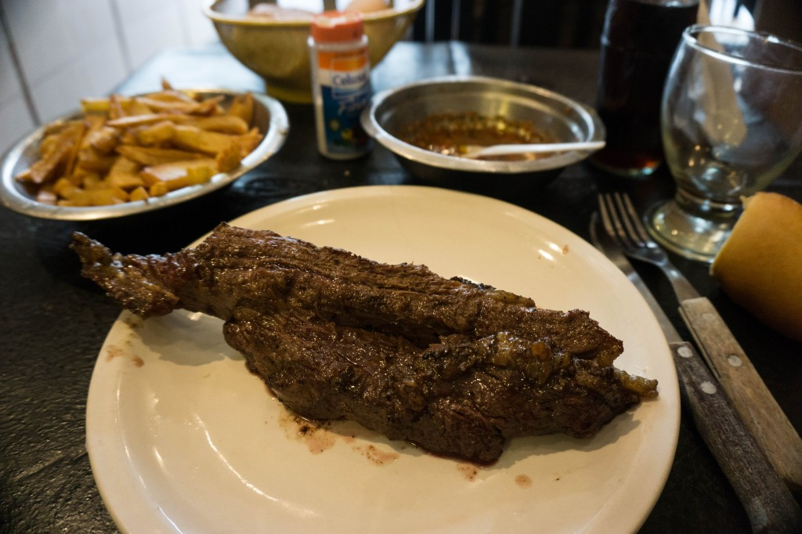
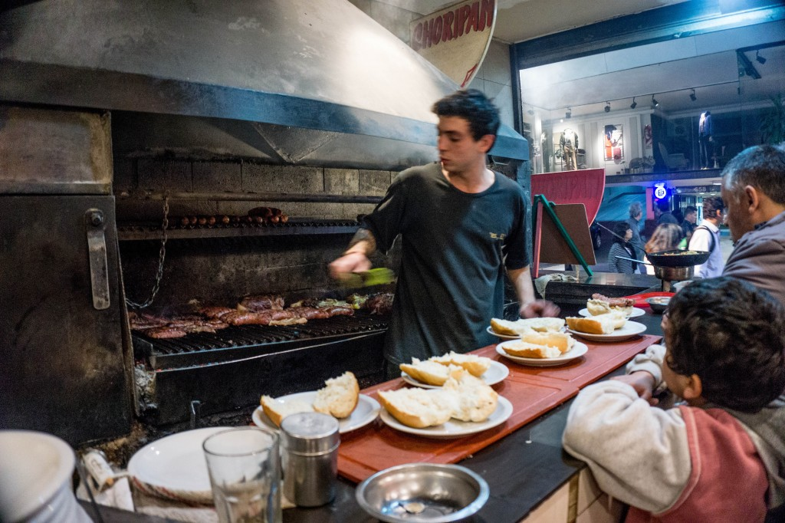
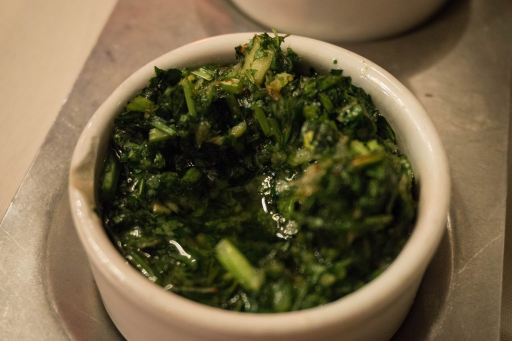

Only one reason why I changed my itinerary and ended up in Argentina: steaks and wine.
I’d dreamt of real steaks for as long as I can remember but I’d been afraid I would have to wait long before my dreams could come true.
Polish restaurants sometimes have Argentinian steaks on the menu, but I expected it wouldn’t be the same (and, as it turned out later on, I was right). You can also find imported beef in shops, but another problem appears: how can you make a perfect steak if you don’t know what the taste should be?
Once I arrived in the south of Bolivia I realised that finally I was really close to ‘a real steak’. I headed down to the border and as I was riding a bus and reading up on steaks I understood how little I knew about beef. I thought a steak is a steak – rare, medium or well done – that’s all that’s there is to know.
Oh, how wrong I was!
Dinner time.
As I found out at the very beginning you should dine late. I needed to learn that through my own mistakes in Salta where I met some friends and we went out for dinner together.
Well, let me tell you that: my first impression of Argentina was that of European-like country. And that’s probalby why we did what we would do in Europe: we went sightseeing, we wandered up and down the streets and then, late in the afternoon we decided to eat in one of the recommended restaurants.
The first one was closed. So was the other one, which surprised as so we stopped a passer-by, ” Excuse me, are restaurants closed on Monday?” “No, they aren’t,” answer the local woman startled with our question and then, as she started to laugh, she explained, ” You are way too early. Come back at around nine!”
It was around six o’clock then and we were hungry but we decided to wait.
And the dinner we had later on was worth all that waiting. As I was coming back to my hostel almost around midnight I decided I’d eat steaks and drink wine every day.
 A restaurant at 8 pm – not many customers.
A restaurant at 8 pm – not many customers.
Restaurant: Gran Parrilla de Plata (Buenos Aires)
 The very same restaurant 2 hours later.
The very same restaurant 2 hours later.
(I’ve just sat down at the table after waiting for it for over 40 minutes)
Spanish vocabulary that you should know:
(bien) cocido (or bien hecho) – well done
a punto – medium
jugoso – medium rare
vuelta y vuelta – rare
Having read many web pages and descriptions I can only conclude that ever Argentinians sometimes have problems defining how medium rare is jugoso, so the above translations are just approximate.
My ideal steak was ‘jugoso’.
The guidebook warns that if you don’t specify what you want you’re most likely to get your steak ‘a punto’ and it turned out to be true – when once I forgot to order it ‘jugoso’ I got it ‘a punto’, but I’d rather describe it more ‘well done’ than ‘medium’.
What to order:
Bife de chorizo – sirloin
Bife de costilla – T-bone
Bife de lomo – tenderloin
Ojo de bife – rib eye
Tira de asado – short ribs
Vacío – flank steak
Matambre – thin flank steak
and many, many more…
Below my first Argentinian steak ever (Bife de chorizo) in Buenos Aires (restaurant: Gran Parilla de Plata – photos above).
I had absolutely no idea that when you order a steak that will be all you’ll get – no side dishes. After placing my order it crosses my mind that I should ask what it goes with, but I didn’t, I just decided to wait. When a waiter brought my steak I saw that 450g of meat is really a lot! All the steaks on the menu were huge, ranging from 400 to 600g on average. They’re ideal for two people to share – I didn’t manage to eat it on my own.
The extras (bread and sauces) that you can see in the photo are free – they were enough for me, I didn’t need any side dishes after all.
There is also a 400ml wine bottle in the picture: I was alone and I couldn’t decide what to take: a glass or a bottle. A glass of wine seemed to little, and two glasses pricewise was the same as a small bottle, so after all it was an easy choice. After my dinner I thought that for such an amount of mean you do need a bottle of wine to wash it down!

Bife de chorizo (jugoso): 
I’ve always thought that tenderloin would be the best for a steak, and that it should be well-done. Because of that I was surprised twice: first time when I realised I love my steak medium rare, and second time when I tried tenderloin and… well, it wasn’t bad, it just lacked character.

In my search for food I always try back alleys further away from pedestrian and touristy centre. However, sometimes I forget about my own rules and it’s worth it. A short description of a cheap parrilla on the main street drew my attention as I was turning the pages of Lonely Planet: a small, discreet eatery on pedestrian Lavalle. Go for a quick choripan.
I was hungry so I opted for menu del dia (meny of the day) – vacío (flank steak) with chips and a drink. It might not look too attractive on my plate but it was pretty good – good enough to make me come back for a recommended choripan.

Word bife signifies steak, so when you order you need to say what kind of steak you want, for example bife de chorizo. Chorizo is also a sausage, and choripan is a roll with a sausage that you might eat with some kind of sauce. Choripan is cheap, tasty and popular – just look at all those rolls on the counter waiting to be completed with sausages – many people were waiting for it.

Desniverl restaurant was described by many as one of the best affordable restaurants and that’s why I went there.
Unfortunately, it was my biggest culinary disappointment in Argentina. After a brief and unsuccessful fight with my hard short ribs I gave up. I ate chips, I drank beer and left wondering if it was the restaurant or if short ribs were simply not for me.
It was only in Uruguay that I found out that short ribs might be delicious. Having one bad experience behind, I would have never ordered them, but that was what Gareth wanted. Fortunately for me, Uruguayan portions turned out to be as big as Argentinian ones so my table companion didn’t manage and there was quite a lot left for me to try.
That was the only time I ordered morcilla (blood sausage) not steak – a tasty bit if you like blood sausage (I do).
One disadvantage of travelling solo is the problem with finding good food companions who’d sometimes want to splurge on better food. Well, you can meet a backpacker who will go out for a drinki, a pizza or some other fast food, but usually not much more. An average backpacker is also often afraid of tasting local food. It might be easy to convince them to visit a cheap local eatery, but they lack the courage to ask what the things. Of course I know some people who never behave like that but I’d say they’re in minority.
At the end of my Montevideo free walking tour our guide was answering questions and I was waiting for my turn, I heard Gareth, who was one of the few people left, asking about food – and that was exactly the question I wanted to ask – that’s how we ended up sitting at the bar together sharing our appreciation for steaks and red wine. As I said before: it’s not easy to find a person who’d appreciate good food, so by the end of lunch we decided to go out for dinner together.
Our choice was La Pedriz (Partridge) restaurant, as recommended by a receptionist from El Viajero hostel where we stayed.
We remember about huge portions so for the three of us we ordered two steaks (with side dishes included) and two bottles of wine. Estera, a Polish girl I met at a hostel who arrived in South America just a few days before, didn’t even want to read the menu, she let us choose, but later admitted she would have never ordered medium rare steaks herself.
(Estera was the first ‘real’ Polish person I met during my travel in South America – all the Polish people I met before where from the USA, Canada, Colombia, Ecuador… but not from Poland).
Our dinner at La Pedriz was my most expensive dinner during the whole trip which says something about how expensive Uruguay is (even chips at McDonalds’ were expensive).
Entering Argentina I knew red wine would be an excellent addition to steaks, but I didn’t expect I’d find another fantastic extra: chimichurri sauce – an Argentinian parsley and garlic sauce, which i also made many times back home (the recipe: HERE.)  I haven’t described all the steaks I ate, neither did I show you the photos of all the steaks I tried on my facebook profile while travelling. If I did you’d think I’m crazy.
Summing up my short culinary trip in Argentina and Uruguay is hard to say anything but: a day without a steak was a wasted day. I guess that during those 10 days I must have eaten more meat than I normally eat during a whole year, because to be honest… I’m not really a fan of meat.

{kind=link}
{kind=link}
{kind=link}
{kind=link}
{kind=link}
{kind=link}
{kind=link}
{kind=link}
{kind=link}
{kind=link}